Research document · System description
VTA QS LMS
A web-based learning management system for a Quantity Surveying (NVQ Level 5) class: what it does, how it is built, and how each function behaves.
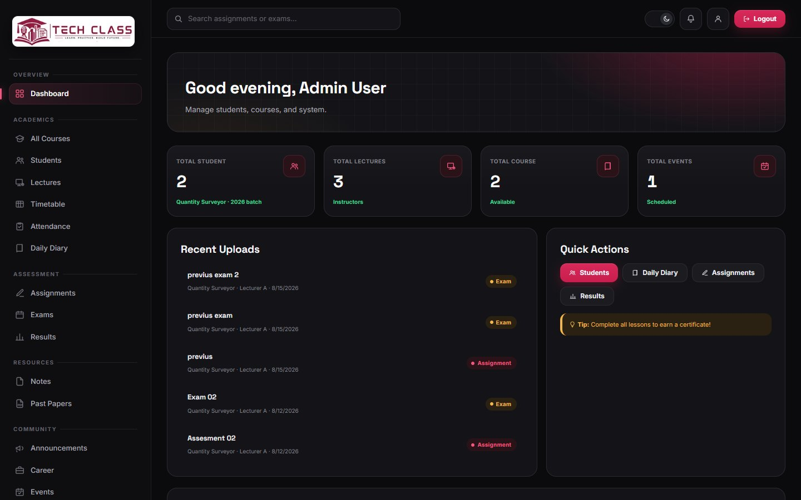
A web-based learning management system for a Quantity Surveying (NVQ Level 5) class: what it does, how it is built, and how each function behaves.

VTA QS LMS (shown to users as Tech Class) is a learning management system built for the Quantity Surveyor course at a vocational training centre in Nintavur, Sri Lanka. The interface names the centre as "DVTC · Nintavur" on the daily diary and "VTA Ninthavur" on the attendance sheet.
The system replaces paper records and scattered messaging with one place for course content, attendance, the instructor's daily diary, assignments, exam paper collection, results, announcements, job listings and events. It runs in a web browser and as an Android app.
This document is written for researchers, students and evaluators who want to study, cite or compare the system. It describes every function from the user's side and explains the rules the server enforces, with a figure for each screen. Statements about behaviour are based on the source code in the repository at the version listed on the cover.
| Area | Functions |
|---|---|
| Academic administration | Courses with semester module lists, student and lecturer records, batches by year, weekly timetable |
| Daily operations | Monthly attendance grid with Excel export, instructor's daily diary with printable PDF output |
| Assessment | Assignments with timed submission windows, exam paper upload portal, grading with feedback, module results matrix |
| Learning resources | Notes and past papers as PDFs with in-app preview |
| Community | Announcements with replies, career listings, events with photos and PDF |
| Access | Three roles, session login, profile and password change, global search, dark and light themes, Android app |
Suggested reference format:
VTA QS LMS project (2026). VTA QS LMS: Research document, version 1.0. Source code: https://github.com/mercyblack011/vta-qs-lms-php-final
When citing a specific behaviour, add the commit hash of the version you studied; the system is still changing.
Every account has exactly one role, stored in users.role. The role decides which menu items appear and which API actions the server allows.
Runs the system. Creates courses, students, lecturers and events, edits the timetable, marks attendance and writes the daily diary. Can manage any assignment, exam, file or announcement.
Teaches one or more modules. Creates assignments and exams, uploads notes and past papers, grades submissions and posts announcements, but only for the course and modules they are assigned to.
Belongs to one batch (for example 2026) and is enrolled in a course. Views course material, the timetable, their own attendance and the diary; submits assignments and exam papers; sees their own marks and feedback.
Full means create, edit and delete. View means read only. Where access is limited to the user's own course or modules, the cell says so.
| Screen | Admin | Instructor | Student |
|---|---|---|---|
| Dashboard | Full overview | Teaching overview | Personal overview |
| Courses | Full ("All Courses") | View own ("My Courses") | View enrolled and catalogue |
| Students | Full | View, filter by course and batch | View classmates |
| Lecturers | Full | View same course | View same course |
| Timetable | Full | View | View |
| Attendance | Full | Not in menu | View own course grid |
| Daily diary | Full | Not in menu | View |
| Assignments | Full | Full, own modules | View and submit |
| Exams | Full | Full, own modules | View and upload paper |
| Results | View all | View own modules | View own marks |
| Notes, past papers | Full | Upload, own modules | View and download |
| Announcements | Full | Post, edit own | Read and reply |
| Career | Full | Post and remove | View |
| Events | Full | View | View |
| Profile | Own | Own | Own |
The menu hides Attendance and Daily Diary from instructors, but the API would accept attendance and diary writes from an instructor account. Section 10 lists this as a point to review.
The system is a classic three-tier web application: a single-page browser client, a PHP JSON API and a MySQL database. It has no framework and no build step, which keeps installation to copying files and running one setup script.
| Layer | Technology | Notes |
|---|---|---|
| Client | HTML, CSS, vanilla JavaScript (about 3,900 lines in js/app.js) | Single page; each menu item swaps a section and calls a render function |
| PDF viewing | PDF.js 3.11.174, loaded from cdnjs on first use | Used to preview assignments, notes and papers in the app |
| Server | PHP 8 (tested on 8.0.30), no Composer packages | Uses PDO, finfo, password_hash |
| Web server | Apache with mod_rewrite | Development setup uses XAMPP on Windows |
| Database | MySQL or MariaDB, InnoDB, utf8mb4 | Foreign keys with cascade rules |
| Mobile | Android APK, version 1.8, Android 7.0 or newer | Downloaded from download.html |
/api/<resource>/<segments> with fetch. JSON bodies are used for plain data and multipart/form-data when a file is attached..htaccess rewrites every /api/* path to api/index.php.api/index.php loads the shared libraries, starts the session, reads the method, and loads api/routes/<resource>.php. Only alphabetic resource names are accepted. A POST carrying a _method field is treated as PUT or PATCH, because PHP does not parse uploaded files on native PUT requests.require_auth() and the role with require_role(), validates input and runs prepared SQL statements.{"error": "message"} with an HTTP status (400, 401, 403, 404, 409 or 500). Unexpected exceptions are logged on the server and shown to the client only as "Internal server error".| Path | Contents |
|---|---|
index.html | App shell: login screen, sidebar, every page section, all modal forms, SVG icon set |
js/app.js | API helper, navigation, rendering for every page, search, attendance Excel writer, diary print builder |
css/style.css | Design tokens, light and dark themes, responsive rules, print rules |
api/index.php | Router |
api/lib/ | bootstrap.php, db.php (env loading, PDO), auth.php, response.php, upload.php |
api/routes/ | admin, assignments, attendance, auth, career, certificates, courses, diary, events, exams, forum, lecturers, lectures, resources, results, students, timetable |
schema.sql, setup.php | Database schema; command-line script that creates the database and demo data |
The database has 22 tables. A users row is a login account. People records (students, lecturers) are separate and may link to an account through user_id, which lets the admin keep a student on the class list before they have a login.
users (for example assignments.instructor_id) are left out to keep the diagram readable.| Table | Holds | Key fields and constraints |
|---|---|---|
users | Login accounts | unique email, bcrypt password_hash, role = student / instructor / admin |
courses | Courses | study_mode (Full Time, Part Time), qualification_type (NVQ-05, Non-NVQ), JSON module lists per semester, duration in months |
enrollments | Account to course link | unique (user, course), progress 0 to 100 |
certificates | Course completion certificates | unique cert_code such as VTA-QS-1A2B3C4D |
students | Class list | nic, mis_no, batch, photo, optional user_id |
lecturers | Teaching staff | lecturer_id (e.g. LEC-01), course_id, JSON list of modules taught |
attendance | One mark per student per day | unique (student, date), status P / A / L, marked_by |
diary_entries | Instructor's daily diary | date, week, month, batch, JSON slots, remarks, T/O signature |
timetables | Weekly timetable | one per course, JSON schedule of 5 days by 4 periods |
lectures | Scheduled lecture records | course, instructor, title, scheduled_at |
assignments | Assignment briefs | course, module, batch, start_at, end_at, optional PDF |
submissions | Student assignment work | unique (assignment, student), file, grade, feedback |
exams | Exam upload windows | course, module, batch, start_at, end_at |
exam_submissions | Uploaded exam papers | unique (exam, student), file, grade, feedback |
results | Older four-subject mark sheet | one row per student: measurement, estimation, contracts, cad |
resources | Notes and past papers | type notes / past_paper, course, module, unit name, PDF |
forum_threads, forum_replies | Announcements and replies | title, body, author |
jobs | Career listings | type Internship / Vacancy, location, closing date |
events, event_photos | Events | name, place, person in charge, date, optional PDF, many photos |
Deleting a course, assignment, exam, event or thread removes its dependent rows through ON DELETE CASCADE. Deleting a user who authored content keeps the content where the column allows SET NULL (for example attendance.marked_by).
This chapter walks through every screen in menu order. Each part says who uses it, what it does and which rules apply.
Users sign in with email and password. The password field has a show and hide toggle. On success the server stores the user's id, name, email and role in a PHP session and issues a new session id. The client keeps a copy of the user object to draw the interface and calls /api/auth/me to confirm the session is still valid. Logging out destroys the session on the server.
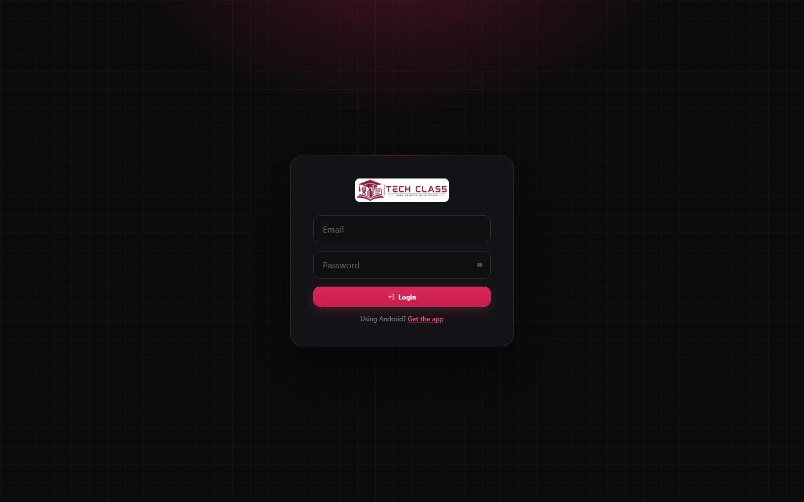
The dashboard greets the user by time of day and shows four summary cards, recent uploads, quick-action buttons and the latest announcements. The cards change by role:
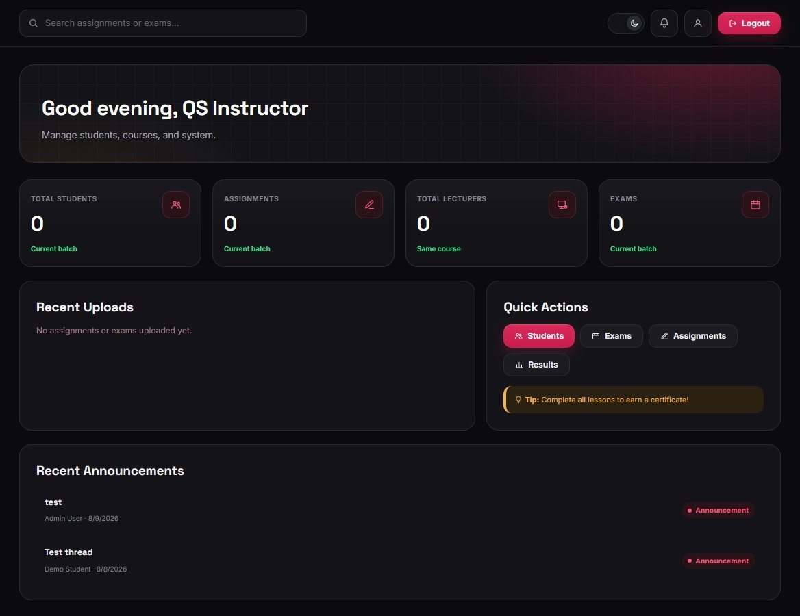
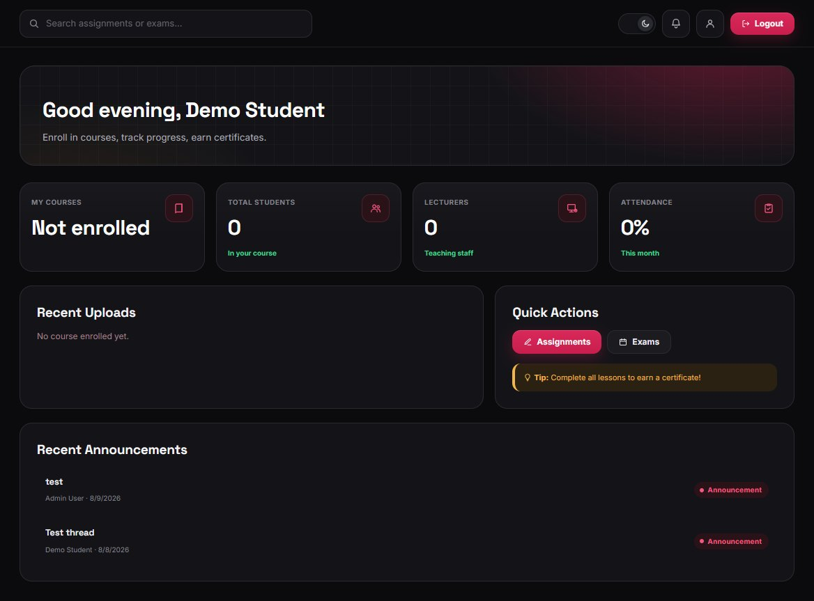
A course has a name, logo, description, duration in months, study mode (Full Time or Part Time) and qualification type (NVQ-05 or Non-NVQ). NVQ courses list modules per semester, each with a code, for example "Measurements (1020)". Non-NVQ courses use a single module list. These module lists feed every module drop-down in the system.
Students see their enrolled course and a catalogue of others, and can open a details window. Course progress is stored per enrollment. Progress can only go up, and when it reaches 100% the server issues a certificate with a unique code that anyone can check at /api/certificates/verify/<code>.
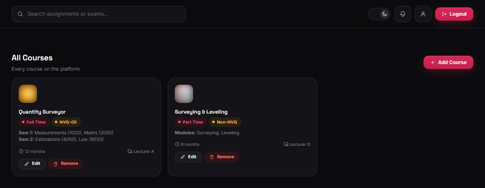
The admin adds a student with name, email, password, course, batch year, NIC number, MIS number and an optional photo (JPEG, PNG, WEBP or GIF, up to 3 MB). This creates the login account, the student record and the enrollment in one step. A duplicate email is refused. The list filters by course and batch, and the latest batch is selected by default. Instructors see the same list read-only; students see classmates on their own course.
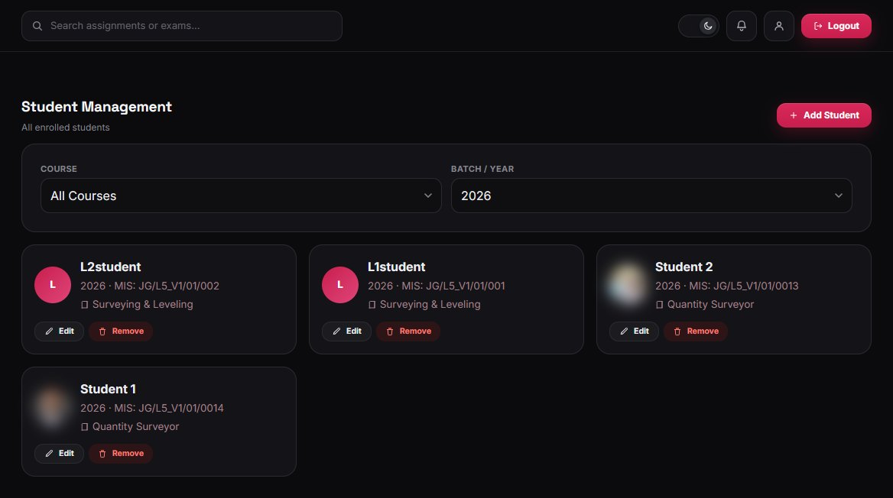
The admin creates lecturer accounts with a lecturer id, a course and the list of modules they teach. This module list is the basis of instructor scoping: an instructor can create, edit, grade or delete assignments, exams and files only for modules on their own list, or items they created themselves.
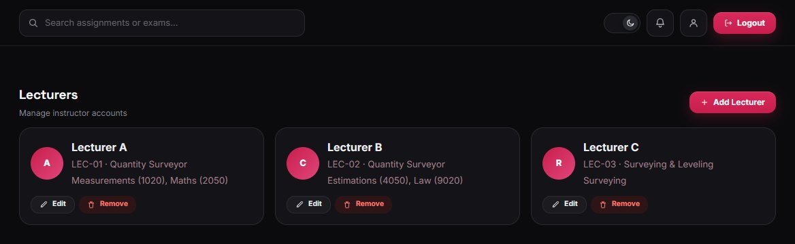
Each course has one weekly timetable: Monday to Friday, four teaching periods a day (8.30 to 10.30, 10.45 to 12.15, 12.45 to 2.45 and 2.45 to 4.15), with breakfast and lunch rows between. Each cell is a module chosen from the course's module list. The server stores the grid as JSON and discards anything outside the five days and four periods.
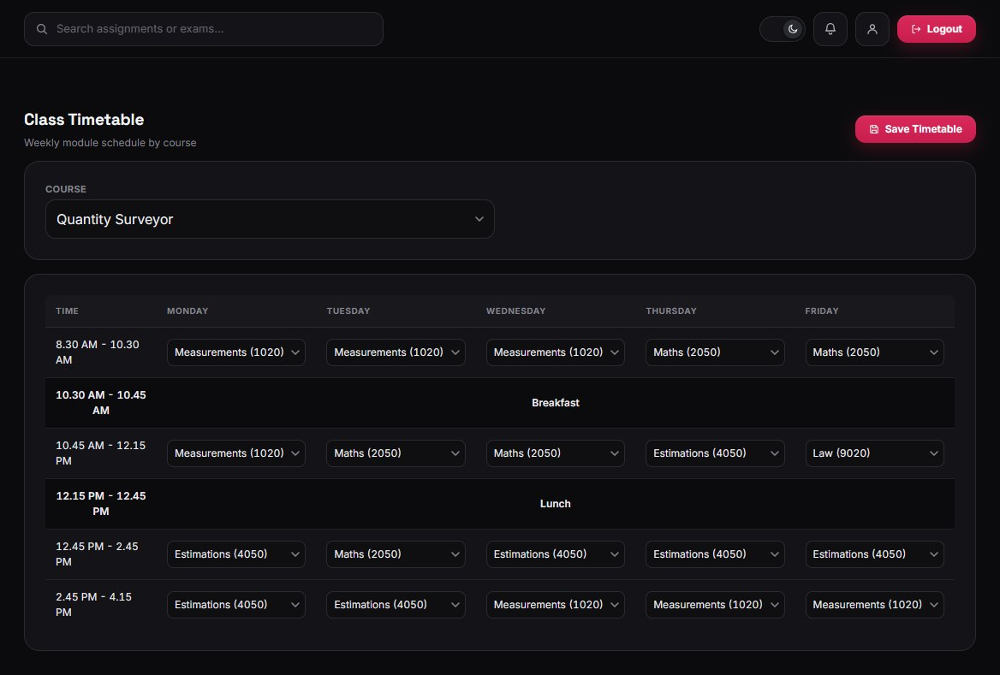
Attendance is a monthly grid: one row per student, one column per day. Clicking a cell cycles it in the order not marked, Present (P), Absent (A), Leave (L), then back to not marked; each click is saved at once. Clicking a day header opens a window to mark the whole class for that day. Summary cards count present, absent and leave marks and show the attendance rate.
.xlsx file in the browser, with no server round trip and no spreadsheet library. The code writes the workbook XML and the ZIP container itself.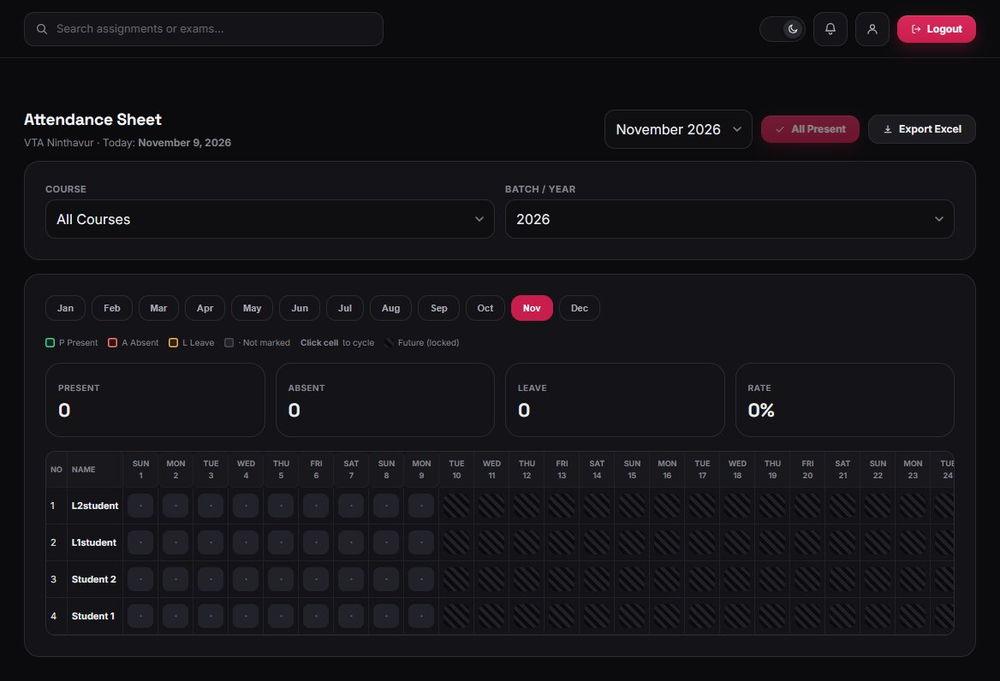
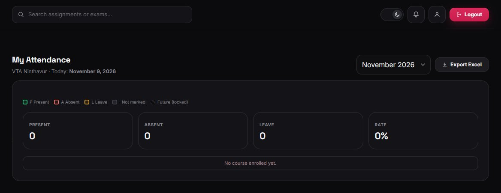
The diary reproduces the centre's paper form. For a chosen course, date and batch it records the week, the month and four time slots. Each slot has a module, a task, the subject covered and the instructor's signature. The form also has instructor remarks, T/O remarks and a T/O signature. Saved entries load again when the same date is chosen. Print / Export PDF builds print pages for a date range, one page per calendar day (blank where no entry exists), through the browser's print dialog. Ranges longer than 62 days ask for confirmation first.
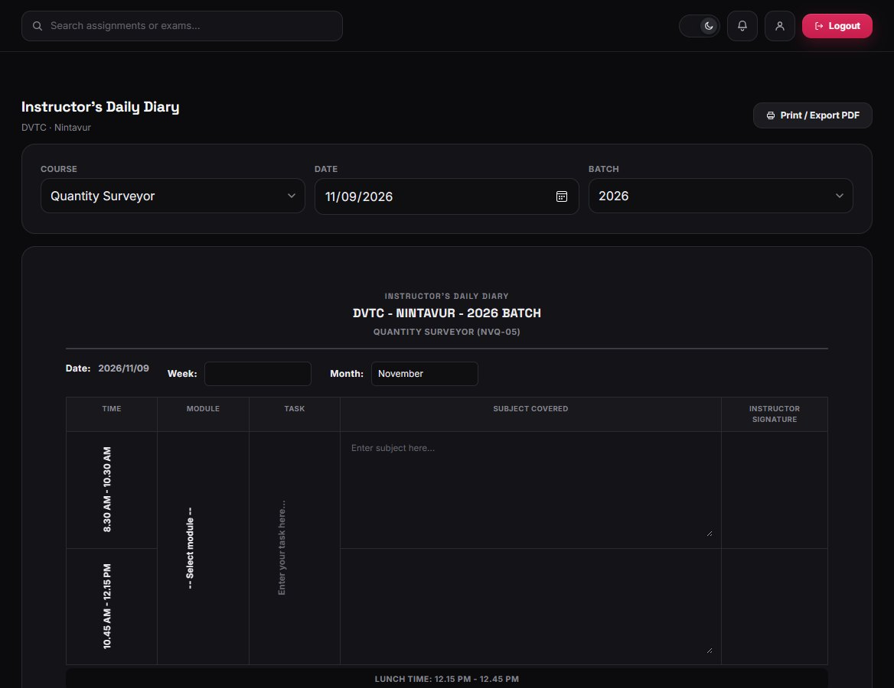
An assignment has a title, course, module, batch, start and end date-time, instructions and an optional PDF brief (up to 15 MB). Its status shows as upcoming, open or closed. Instructors and admins can change the end time, view every submission, preview the files and enter a grade and written feedback.
Students see assignments for their batch (or with no batch set). They submit one PDF or image file before the end time; after that the server refuses the upload. Once graded, the student sees the grade and feedback on the same card.
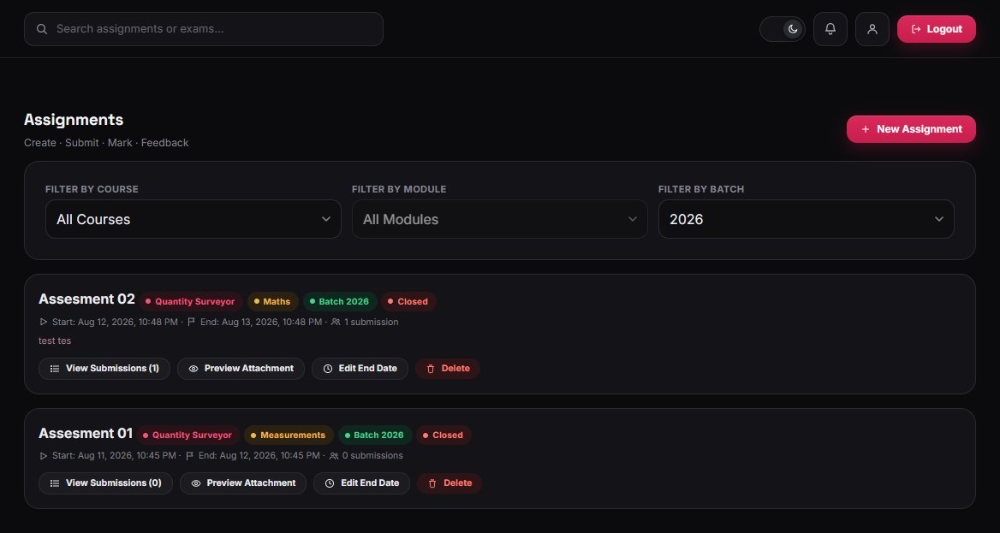
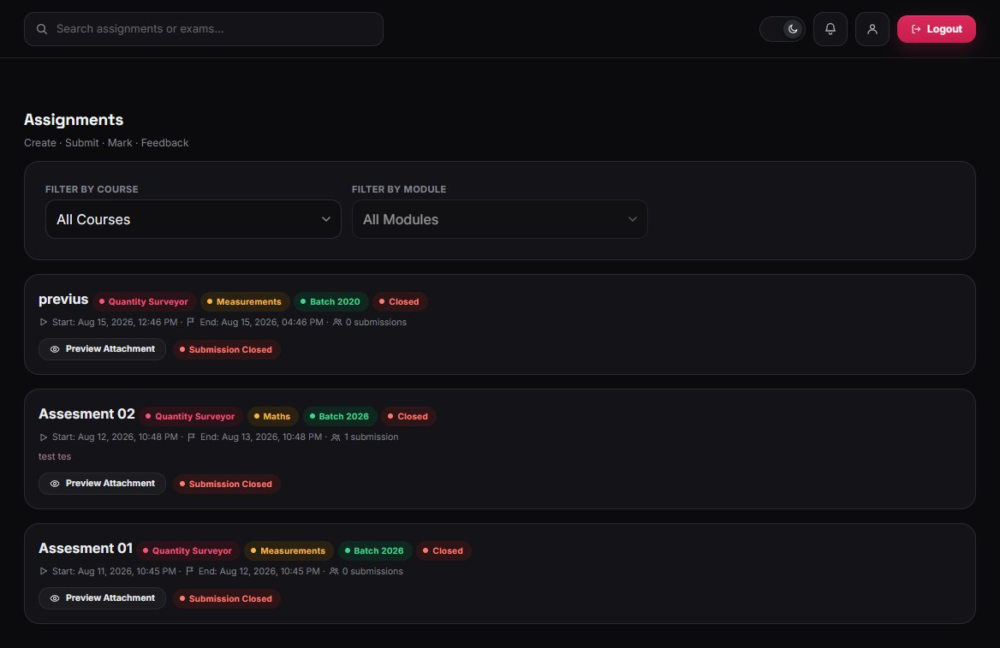
The exam portal is used for papers written on paper in class. An instructor opens a submission window for a course, module and batch with a start and end time. During the window each student uploads a photo or PDF of their answer sheet, one per exam. After the window closes uploads are refused. Staff can view the papers, extend the end time and grade each one.
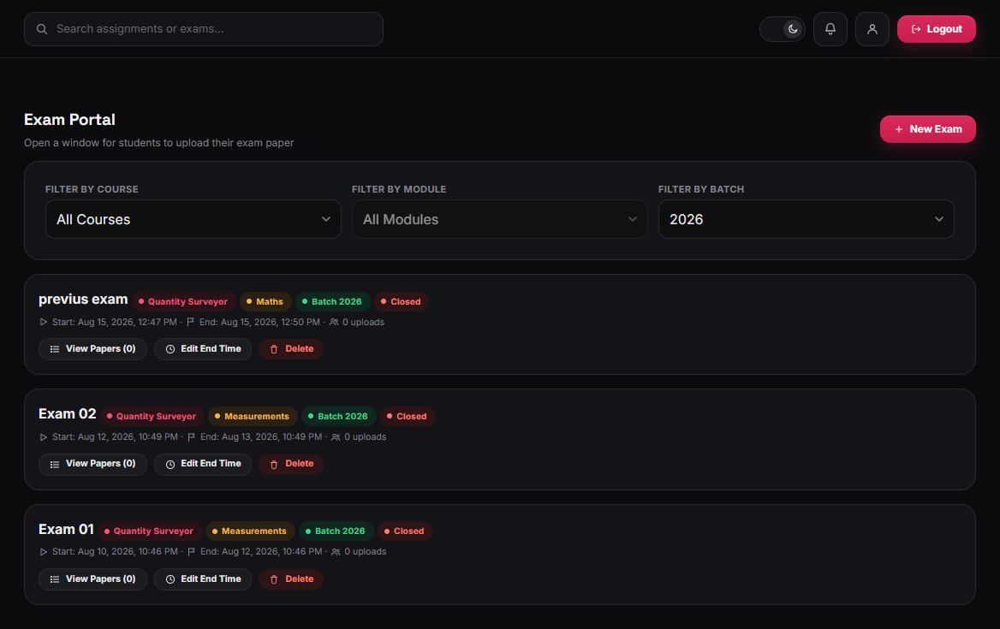
Results combine assignment and exam grades into one matrix for a course, an optional module and a batch. Each row is a student and each column is an assignment or an exam. Colours mark three states: Absent (no submission), Pending (submitted but not graded) and Fail (a numeric mark below 40). The last column counts fails and absences per student, and the footer gives totals per column. Instructors can open results only for modules they teach; students see only their own row.
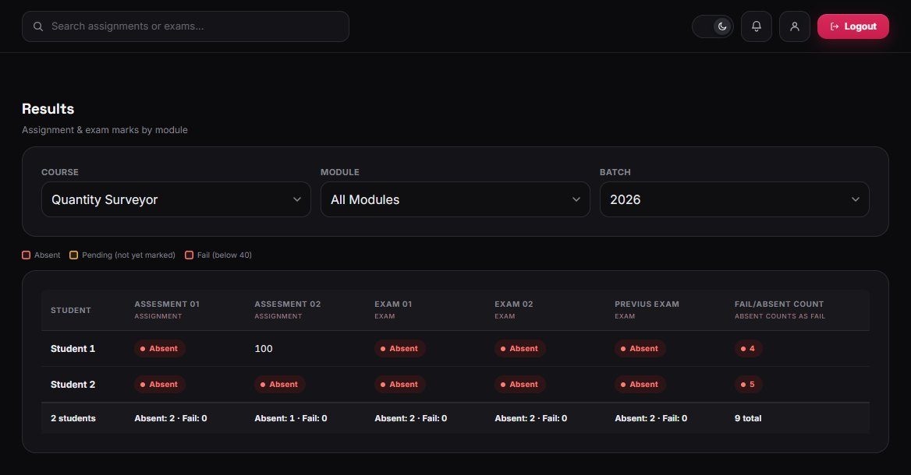
The API also keeps an older four-subject mark sheet (results table) which computes a GPA and letter grade; see section 6.
Both screens work the same way. Staff upload a PDF (up to 15 MB) with a course, module and unit name. Everyone can filter by course and module, preview the PDF inside the app and download it. Delete buttons appear only for the admin, the uploader, or an instructor who teaches that module.
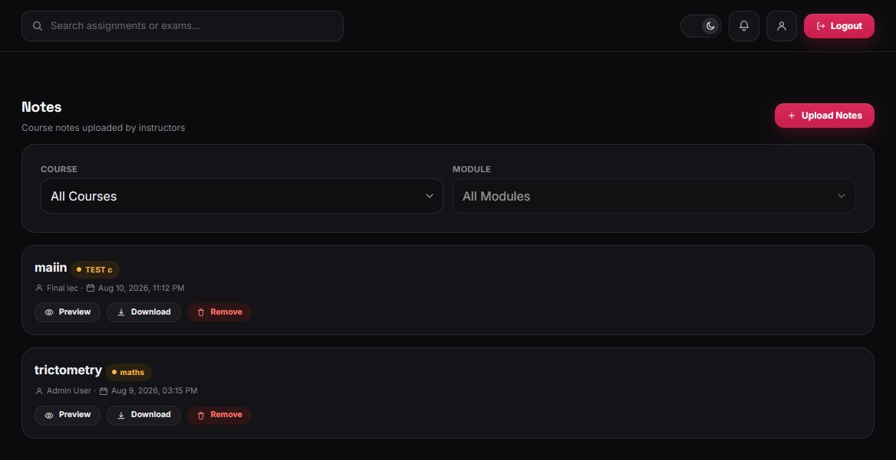
Announcements are threads with a title and body. Admins and instructors post them; everyone can read them and add replies. Instructors can edit or delete only their own announcements, while the admin can edit or delete any. The five newest announcements also appear on every dashboard.
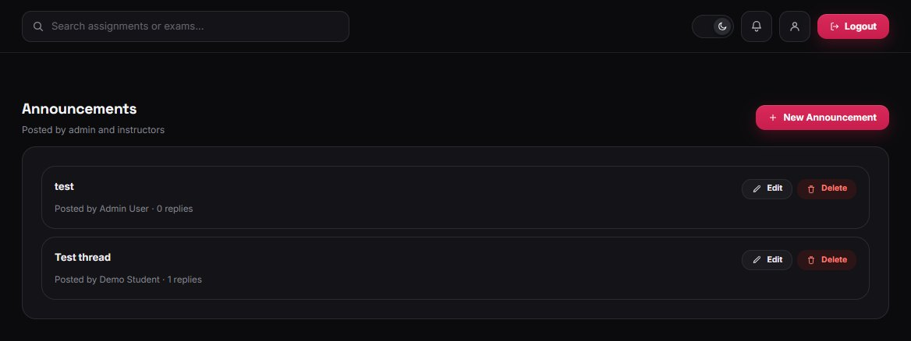
A board of internships and vacancies, each with a title, type, location, closing date and description.
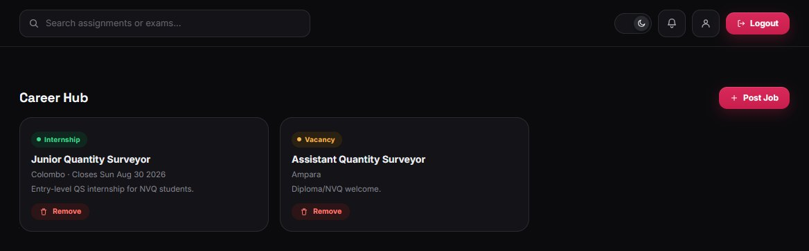
Events record a name, place, person in charge and date-time, with an optional PDF (for example a circular or programme) and any number of photos. Photos can be added or removed individually later.
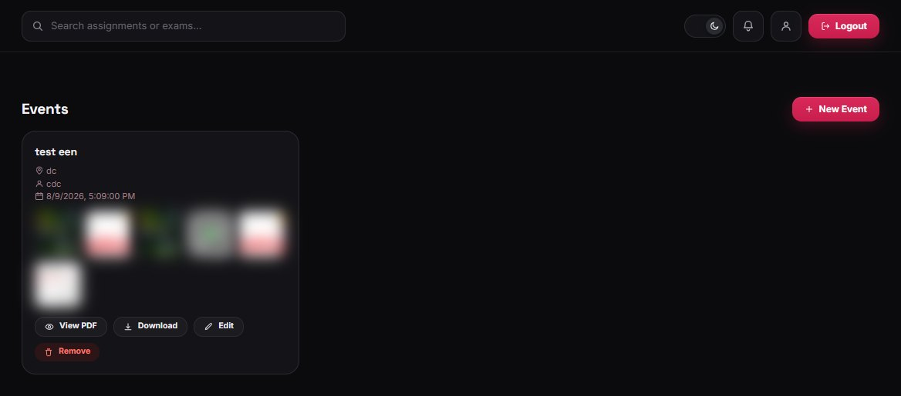
Users can change their display name and, for students and lecturers, their photo. The password change form asks for the current password and a new one of at least four characters. Students also see their MIS number, NIC and batch; lecturers see their lecturer id and modules.
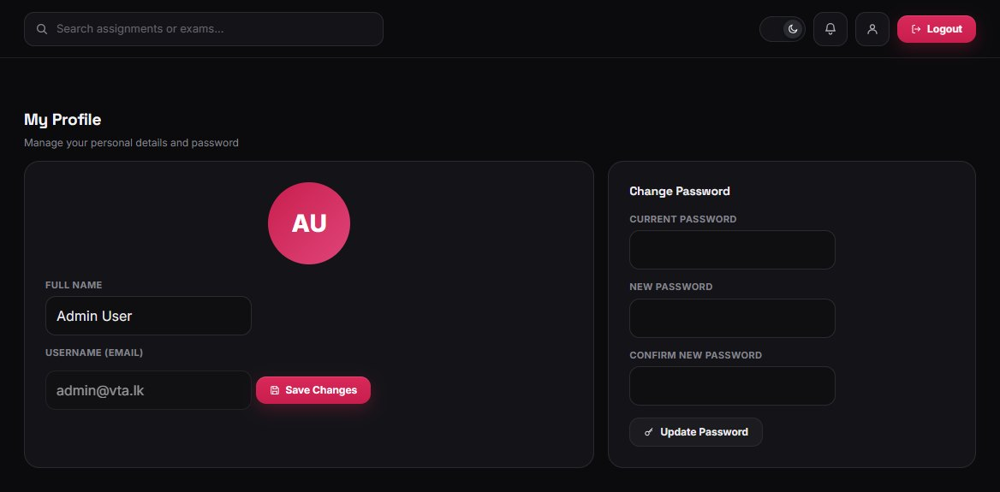
The search box at the top searches assignments and exams. Both lists are loaded once per session (already limited by the user's role) and filtered as the user types, with the match highlighted and keyboard navigation. Choosing a result opens the right page and highlights the item.
The rules below are enforced by the server, so they hold even if someone bypasses the interface.
An instructor may manage an assignment, exam or resource when any of these is true:
Lists shown to instructors are filtered by the same rule, and each item carries a flag (can_edit_deadline, can_delete) that the interface uses to show or hide buttons.
| Action | Rule |
|---|---|
| Submit assignment | Refused after end_at. One submission per student per assignment. |
| Upload exam paper | Refused after the exam's end_at. One paper per student per exam. |
| Mark attendance | Refused for dates after today. |
| Mark month present | Past months only; weekdays only; does not overwrite existing marks. |
| Upload | Allowed types | Max size |
|---|---|---|
| Profile, student, lecturer photos; course logos | JPEG, PNG, WEBP, GIF | 3 MB |
| Assignment briefs, notes, past papers, event PDF | 15 MB | |
| Assignment submissions, exam papers | PDF, JPEG, PNG, WEBP, GIF | 15 MB |
| Event photos | JPEG, PNG, WEBP, GIF (several per upload) | 15 MB each |
The file type is checked from the file's contents with PHP's finfo, not from the name or the browser's claim. Files are renamed to a timestamp plus a random number. When a record is replaced or deleted, its old file is removed from disk.
VTA-QS- followed by 8 random hexadecimal characters.| Concern | How the system handles it |
|---|---|
| Authentication | PHP sessions. Cookie is HttpOnly and SameSite=Lax. Session id is regenerated at login. |
| Passwords | bcrypt via password_hash; never returned by the API (public_user() removes the hash). |
| Authorisation | Role check on every write; module-level scoping for instructors (section 6.2). |
| SQL injection | All queries use PDO prepared statements with real (not emulated) prepares. |
| Cross-site scripting | User text is escaped with an escapeHtml() helper before it is inserted into the page. |
| Uploads | Content-based type check, size limits, server-generated file names. |
| Configuration | Database credentials live in .env, which git ignores and Apache refuses to serve. schema.sql is also blocked. setup.php refuses to run from a browser. |
| Error handling | Unexpected errors are logged on the server; the client receives only a generic message. |
The system stores names, emails, NIC numbers, MIS numbers, photos, attendance, grades and submitted work. Researchers who use a live installation should get permission from the centre and anonymise records before publishing, as was done for the figures in this document.
All paths start with /api. "Login" means any signed-in user. "Scoped" means the instructor rule in section 6.2 applies.
| Method | Path | Who | Purpose |
|---|---|---|---|
| POST | /auth/login | Public | Sign in |
| POST | /auth/logout | Public | Sign out |
| GET | /auth/me, /auth/profile | Login | Current user; profile with student or lecturer details |
| PUT | /auth/profile, /auth/password | Login | Update name and photo; change password |
| GET | /admin/stats | Admin | Total students |
| GET | /courses | Public | Course list |
| POST, PUT, DELETE | /courses, /courses/{id} | Admin, instructor | Create, edit, delete course |
| GET | /courses/mine | Login | Enrolled or taught courses |
| GET | /courses/{id}/summary, /lecturers, /students | Login | Counts and people for one course |
| POST | /courses/{id}/enroll | Admin, instructor | Enroll a user |
| POST | /courses/{id}/progress | Login (enrolled) | Update progress; may issue certificate |
| GET | /certificates/mine | Login | Own certificates |
| GET | /certificates/verify/{code} | Public | Check a certificate code |
| GET | /students, /students/batches | Admin, instructor | Student list; batch years |
| POST, PUT, DELETE | /students, /students/{id} | Admin | Manage students |
| GET | /lecturers | Admin, instructor | Lecturer list |
| POST, PUT, DELETE | /lecturers, /lecturers/{id} | Admin | Manage lecturers |
| GET | /lectures | Login | Lecture records |
| POST, PUT, DELETE | /lectures, /lectures/{id} | Admin | Manage lecture records |
| GET / PUT | /timetable | Login / Admin | Read / save a course timetable |
| GET | /attendance, /attendance/mine | Login | Attendance for a month; own attendance |
| PUT | /attendance | Admin, instructor | Set or clear one mark |
| POST | /attendance/mark-day | Admin, instructor | Mark all students for a day |
| POST | /attendance/mark-all-present | Admin, instructor | Fill a past month |
| GET | /diary | Login | Diary entries |
| POST, PUT, DELETE | /diary, /diary/{id} | Admin, instructor | Manage diary entries |
| GET | /assignments | Login | List (filtered by role and batch) |
| POST, DELETE | /assignments, /assignments/{id} | Admin, instructor (scoped) | Create, delete |
| PUT | /assignments/{id}/deadline | Admin, instructor (scoped) | Change window |
| POST | /assignments/{id}/submit | Student | Upload work |
| GET | /assignments/{id}/submissions | Admin, instructor (scoped) | View submissions |
| PUT | /assignments/{id}/submissions/{sid}/grade | Admin, instructor (scoped) | Grade and feedback |
The same seven endpoints exist under /exams, with exam papers in place of assignment work. | |||
| GET | /results | Login | Four-subject mark sheet with GPA |
| GET | /results/module | Login (scoped) | Assignment and exam matrix |
| PUT | /results/{studentId} | Admin, instructor | Save four-subject marks |
| GET | /resources | Login | Notes and past papers |
| POST, DELETE | /resources, /resources/{id} | Admin, instructor (scoped) | Upload, remove |
| GET, POST | /forum/threads | Login / Admin, instructor | List / post announcements |
| PUT, DELETE | /forum/threads/{id} | Admin, author | Edit, delete |
| GET, POST | /forum/threads/{id}/replies | Login | Read, reply |
| GET | /career | Login | Job listings |
| POST, DELETE | /career, /career/{id} | Admin, instructor | Post, remove |
| GET | /events | Login | Events with photos |
| POST, PUT, DELETE | /events, /events/{id}, /events/{id}/photos/{pid} | Admin | Manage events and photos |
The interface uses CSS design tokens with two themes. Dark is the default: graphite surfaces with crimson used only for main buttons, the active menu item, icons and focus rings. A toggle in the top bar switches to light, and the choice is saved in the browser. Printed pages, such as the diary, always use a white layout.
Below 760 pixels wide the sidebar becomes a slide-in menu, cards stack in one column and wide tables such as the attendance grid scroll sideways.
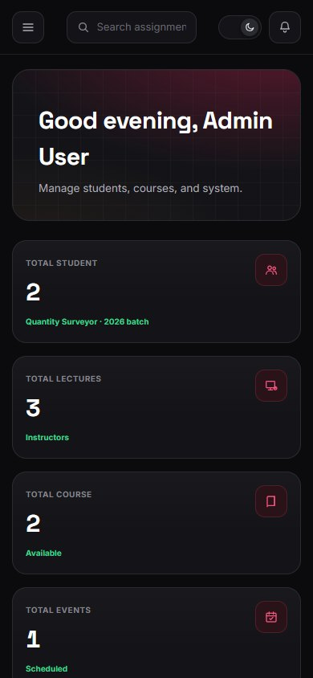
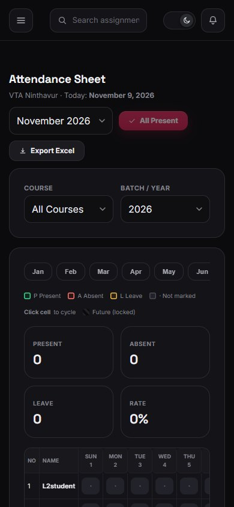
Each page shows skeleton placeholders while data loads. Buttons show a loading state during requests. Results of actions appear as short toast messages, and destructive actions ask for confirmation first.
The Android app, named Tech Class, is offered on download.html as a 5.6 MB APK (version 1.8, Android 7.0 or newer). The app shows the web application inside an Android WebView. The web code detects when it runs inside the app and adjusts file downloads and the splash screen. Because a WebView cannot display PDFs on its own, the system renders PDFs with PDF.js onto a canvas, which works the same in the browser and in the app.
These points come from reading the code. They are useful for evaluation chapters and as directions for further development.
| Area | Observation |
|---|---|
| Password policy | The minimum length is 4 characters, and there is no limit on failed login attempts. |
| CSRF | There is no anti-CSRF token. The SameSite=Lax cookie blocks most cross-site writes in modern browsers. |
| Role consistency | The menu hides Attendance and Daily Diary from instructors, but the API allows instructors to write both. |
| Results model | The older results table has four fixed subject columns, while courses define modules freely. The module results matrix does not have this limit. |
| Notifications | No email, SMS or push notifications for new assignments, grades or announcements. |
| Testing | The repository has no automated tests. |
| Deployment | .htaccess points the 404 page to /404.html, which only works when the app sits at the domain root. |
| External dependency | PDF preview loads PDF.js from a public CDN, so it needs internet access. |
| Analytics | No built-in reports beyond counts, attendance rate and the results matrix; data would need exporting for statistical study. |
| Term | Meaning in this system |
|---|---|
| QS | Quantity Surveying, the discipline the course teaches |
| NVQ-05 | National Vocational Qualification, Level 5; a course qualification type |
| Batch | The intake year of a group of students, for example 2026 |
| MIS number | Student registration number, for example JG/L5_V1/01/0013 |
| NIC | National Identity Card number |
| Module | A subject inside a course, with a code, for example Estimations (4050) |
| T/O | The officer who countersigns the daily diary, as labelled on the diary form |
| Scoped | Limited to the course and modules a lecturer is assigned to |
| Submission window | The period between an assignment's or exam's start and end time |
The PDF is generated from an HTML source kept next to it in the repository:
| File | Purpose |
|---|---|
docs/research/research-document.html | The text and layout. Edit this to change the document. |
docs/research/images/ | Screenshots used as figures |
docs/research/build-pdf.mjs | Turns the HTML into the PDF using Chrome or Edge |
docs/Research-Document.pdf | The finished PDF |
To rebuild after an edit, run from the repository root (Node.js 22 or newer and Chrome or Edge installed):
node docs/research/build-pdf.mjs
When the system changes, update the version and date on the cover, revise the affected sections and replace any outdated screenshots. Before publishing new screenshots, remove real names and photos.